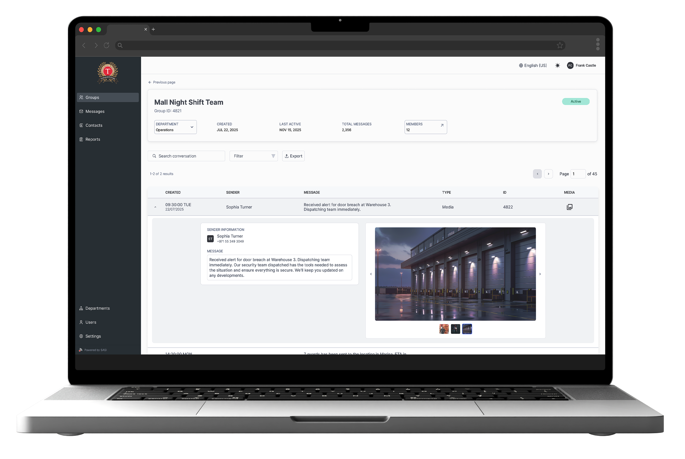
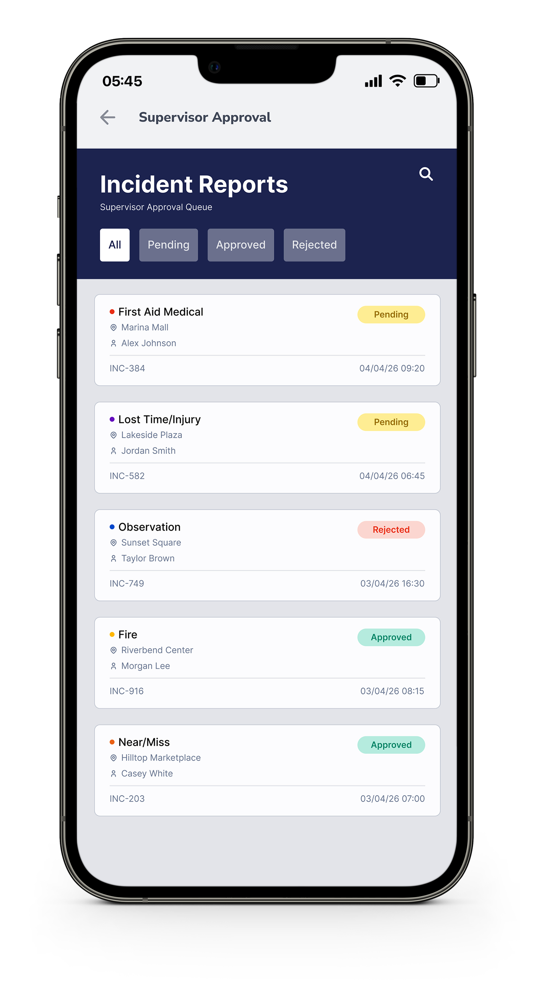
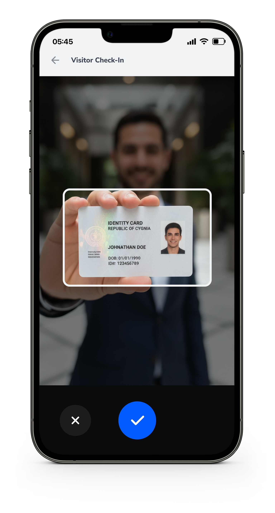

Monitoring Systems

Transguard Group · UAE
WhatsApp Operations Monitor
A monitoring system giving operations leadership full visibility into security deployments — without changing how guards work on the ground.
View case study
New Apostolic Church · Zambia / Malawi / Zimbabwe
People Management Platform
A full-scale platform to digitise church operations across three countries — built around a hierarchical permission system that mirrors the church's own structure.
View case study
Apps
Spark Security · UAE
Incident Report Approval
A mobile module for supervisors to review and sign off incident reports in the field — designed for speed, clarity, and one-handed use.
View case study
SASI Product · South Africa
Visitor Management System
A simple, fast check-in flow for security guards at residential and commercial buildings — replacing pen-and-paper logbooks with a smarter, more reliable process.
View case study